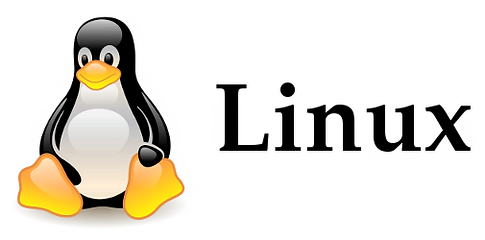

SISTEMAS OPERATIVOS ¿QUÉ ES?, CLASIFICACIÓN, EJEMPLOS
¿Qué son?
Los sistemas operativos son los recursos que se encargan de
administrar las funciones que puede ejecutar un ordenador. Son
designados como fuente principal de acción en una computadora.
Estos programas también reciben el nombre de software. Su
operación consta de crear una conexión entre el trabajo general
del computador y los usuarios. El software trabajará en conjunto
con el hardware y, siempre y cuando todo esté en correcto
funcionamiento, estos permitirán dar inicio a las funciones del
equipo. Para lograr el trabajo de estos artefactos es necesario
que tenga un sistema operativo, de lo contrario el ordenador solo
se convertiría en una maquina inservible.
Funciones de los sistemas operativos
-
Generan métodos de funcionamiento en el ordenador que permitan
administrar órdenes determinadas.
-
Funcionan de manera elemental para poner en acción los recursos
externos, ordenar archivos y mantener almacenada de información
debido a su método de trabajo.
-
Cuentan con la metodología de poder ejecutar un cambio en el
lenguaje del sistema. Transforma los códigos digitales a un
lenguaje entendible por los usurarios.
-
Brindan accesibilidad y control de aquellos dispositivos
externos al equipo que son necesarios también para su mejor y
más cómodo uso. Algunos de ellos son: impresoras, mouse,
teclado, entre otros.
-
Permiten la opción de equilibrar y gestionar las diversas
aplicaciones instaladas. Este mecanismo puede dividir el uso de
la memoria para la utilización de diversos programas.
-
osibilitan ejecutar simultáneamente acciones de diversos
funcionamientos del equipo sin que colisionen entre ellas, ni
que se generen pérdidas en la calidad del servicio. Se puede
estar realizando una grabación o guardar archivos mientras se
obtiene acceso al disco duro o se utiliza la cámara.
-
A partir de la creación de un usuario, permite sintetizar y dar
orden a las funciones establecidas y primordiales de acuerdo al
interés del usuario.
Sistemas operativos que existen para PC
En el mercado existen múltiples sistemas operativos para la
administración de nuestros ordenadores. Algunos de los primeros,
pero también poco usados en este tiempo son: Unix, DOS, AmigaOS,
OS/2. En la actualidad aquellos más conocidos e implementados
vienen siendo: Microsoft Windows, Mac OS X y Linux. A pesar de que
el sistema operativo ya viene instalado al adquirir una
computadora, éste puede cambiarse de acuerdo al interés de los
usuarios. Resulta importante tener conocimiento del sistema
operativo con que trabaja nuestro ordenador, ya que algunos
ejercen ciertas funciones y métodos de trabajo que otros no.
Cualquiera que maneje el área informática puede usarlo como
instrumento para sus intereses y sacar gran provecho de ello.
Ahora pasaremos a describir los 3 sistemas operativos más usados a
nivel mundial.
Microsoft Windows: Es el sistema operativo más reconocido
y utilizado en la industria. Da inicio en el año1985 bajo el
nombre de Interface Manager, luego se convierte en Windows 1.0.
A pesar de que para esos años no brindaba un funcionamiento
óptimo, al transcurrir el tiempo fueron sacando versiones
avanzadas y de mayor funcionalidad. Para el año 2015 Microsoft
crea la última versión hasta los momentos la cual se denomina
como Windows 10. El sistema operativo Windows es uno de los más
utilizados debido a que brinda un buen funcionamiento y variadas
herramientas de interés para los usuarios. Su administración en
los mecanismos del ordenador es sencilla y manejable; establece
el inicio en sus operaciones de forma más rápida y segura.
Mac OS X: Los orígenes de este sistema operativo se
remontan a 1988. Para el 2001 es comprado por la reconocida
marca Apple y su nombre es cambiado a Mac OS X, en su primera
versión. Desde el 2001 hasta la actualidad se han lanzado
diversas actualizaciones, estas brindan mejor funcionamiento e
interés en los usuarios. Su gran demanda en el mundo tecnológico
se basa en que su método de empleo es sencillo de utilizar, no
posee mayor dificultad a la hora de aprender a implementarlo y
trabaja a través de un manejo dinámico y llamativo. El sistema
operativo Mac OS X solo puede ser desarrollado en equipos de la
marca Apple. No obstante, el interés de los usuarios en estos
hardware y software es considerable y ha llegado a ser en
ocasiones mayor que el de Windows.
Linux: Linux comienza a establecer sus funciones a partir
del año 1980. En el 2001 es que este proyecto toma más fuerza y
obtiene mejoras en el tiempo hasta la actualidad. Al igual que
Windows o Mac OS X, trabaja a través del uso de una interfaz
gráfica, pero también puede ser usado por líneas de comandos. Se
puede acceder a esta herramienta de forma fácil y gratuita sin
la estricta autorización de la empresa desarrolladora. Gracias a
que se considera un sistema de código abierto, algunos usuarios
también tienen la opción de poder crear nuevas funciones que
cualquiera pudiera usar.Mantiene gran seguridad al momento de
hallarse con virus en la web, ya que resguarda de la mejor forma
los archivos e información. Puede realizar múltiples tareas
debido a la forma en que está creado y también permite tener
varios usuarios de manera simultánea y segura.
